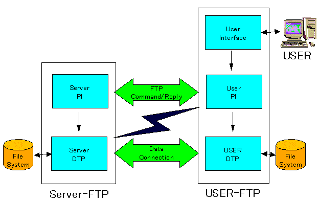

ftpクライアント
RFC959 FILE TRANSFER PROTOCOL (FTP)
FTPモデル

- PI ...protocol interpreter
- DTP...data transfer process
解説:
上図のFTPモデルが示すように、ＦＴＰでは、コマンドをやり取りする通信と、データのやり取りを行う通信は
別個のプロセスとして定義されています。
つまり、ftpでは、コマンドのやり取りを行う制御用の通信と、データのやり取りを行う通信とは、各々独立して
ｔｃｐセッションを開始します。
データコネクションは、どちらから初めても構いませんが、通常はServerからクライアントに接続に行きます。
逆にデータコネクションをクライアントから接続しに行くモードをPassivモードと呼びます。
データコネクションの受信側はSocketをオープンし、コネクションをListenし、そのListenポート番号を相手先に
ftpコマンドのレスポンスとして通知します。（PORTコマンドまたはPASVコマンド）
通知を受けたポートをＰＩからＤＴＰが受け取り、コネクションを開始し、各々のファイルシステムＩ／Ｏを行います。
各ＰＩは、ＤＴＰの状況を監視します。
当サンプルプログラムでは:
- PASVモードを使用しています。
（切り替えのロジックは入っていません。PasvモードをサポートしていないFTPサーバーでは、通信出来ません。）
- 通常は、User Interface ＝＞ User PIの部分は、対話式にftpサブコマンドを投入できますが、当サンプルでは、
下記の様に、プログラムごとにあらかじめ準備された、固定された順番でftpサブコマンドを実行します。
SNDFTPF
USER,PASS,PASV,CWD,PWD,TYPE,STOR,QUIT
RCVFTPF
USER,PASS,PASV,CWD,PWD,TYPE,RETR,QUIT
QRYFTPF
USER,PASS,PASV,CWD,PWD,TYPE,NLST,QUIT
- シフトJISとEDCDIC(CCSID 5035)の変換をプログラムの中で行っていますので半角カタカナ(CCSID 290)は文字化け
してしまいます。
[Return]